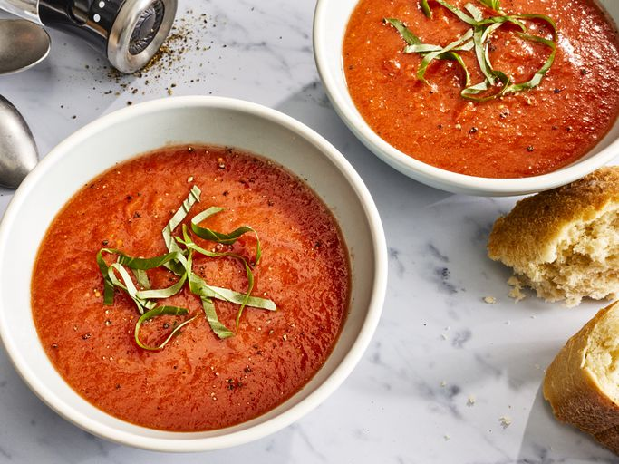

Fresh Tomato Soup

Description
This is a simple tomato soup recipe.
Ingredients
- Tomatoes
- Chicken broth
- Garlic
- Onion
- Butter
- Flour
- Sugar and salt
Steps
- Boil the tomatoes, onion, garlic, and broth
- Run the mixture through a food mill into a large bowl
- Make a roux
- Add the tomato mixture and seasoning